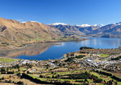

Wanaka
100 Kilometres north of Queenstown is the smaller, more relaxed town of Lake Wanaka. Although less commercialised than its southern counterpart, it's easy to understand why Wanaka is dubbed the Next Queenstown and one of New Zealand's best kept secrets.
Wanaka lies on the border of Mount Aspiring National Park, a world-class heritage area covering thousands of square hectares stretching from Makarora in the north to South Westland on the West Coast and south to the wilds of Fiordland.
As well as being a popular summer destination, Wanaka is also well regarded for being close to some of New Zealand's best ski-fields. Cardona and Treble Cone ski areas are located just 30 minutes drive from the township and offer world-class skiing terrain. You won't miss out on an equally breath-taking dose of beauty here. The views from the township overlooking Lake Wanaka to the Majestic Mount Aspiring mountain range beyond are simply superb.